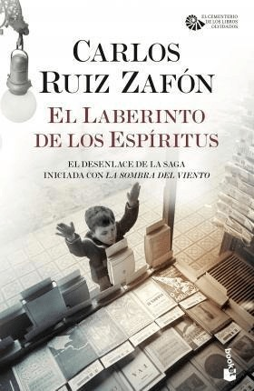

La sombra del viento

En un amanecer de 1945, un muchacho es conducido por su padre a un misterioso lugar oculto en el corazón de
la ciudad vieja: El Cementerio de los Libros Olvidados. Allí, Daniel Sempere encuentra un libro maldito que
cambia el rumbo de su vida y lo arrastra a un laberinto de intrigas y secretos enterrados en el alma oscura
de la ciudad. La Sombra del Viento es un misterio literario ambientado en la Barcelona de la primera mitad
del siglo XX, desde los últimos esplendores del Modernismo hasta las tinieblas de la posguerra.
Compralo acá
El juego de ángel

En la turbulenta Barcelona de los años 20 un joven escritor obsesionado con un amor imposible recibe la
oferta de un misterioso editor para escribir un libro como no ha existido nunca, a cambio de una fortuna y,
tal vez, mucho más.
Con estilo deslumbrante e impecable precisión narrativa, el autor de La Sombra del Viento nos transporta de
nuevo a la Barcelona del Cementerio de los Libros Olvidados para ofrecernos una gran aventura de intriga,
romance y tragedia, a través de un laberinto de secretos donde el embrujo de los libros, la pasión y la
amistad se conjugan en un relato magistral.
Compralo acá
El pricionero del cielo

Barcelona, 1957. Daniel Sempere y su amigo Fermín, los héroes de La Sombra del Viento, regresan de nuevo a la
aventura para afrontar el mayor desafío de sus vidas.
Justo cuando todo empezaba a sonreírles, un inquietante personaje visita la librería de Sempere y amenaza
con desvelar un terrible secreto que lleva enterrado dos décadas en la oscura memoria de la ciudad. Al
conocer la verdad, Daniel comprenderá que su destino le arrastra inexorablemente a enfrentarse con la mayor
de las sombras: la que está creciendo en su interior.
Rebosante de intriga y emoción, El Prisionero del Cielo es una novela magistral donde los hilos de La Sombra
del Viento y El Juego del Ángel convergen a través del embrujo de la literatura y nos conduce hacia el
enigma que se oculta en el corazón del Cementerio de los Libros Olvidados.
Compralo
acá
El laberinto de los espiritus

En la Barcelona de finales de los años 50, Daniel Sempere ya no es aquel niño que descubrió un libro que
habría de cambiarle la vida entre los pasadizos del Cementerio de los Libros Olvidados. El misterio de la
muerte de su madre Isabella ha abierto un abismo en su alma del que su esposa Bea y su fiel amigo Fermín
intentan salvarle.
Justo cuando Daniel cree que está a un paso de resolver el enigma, una conjura mucho más profunda y oscura
de lo que nunca podría haber imaginado despliega su red desde las entrañas del Régimen. Es entonces cuando
aparece Alicia Gris, un alma nacida de las sombras de la guerra, para conducirlos al corazón de las
tinieblas y desvelar la historia secreta de la familia… aunque a un terrible precio.
El Laberinto de los Espíritus es un relato electrizante de pasiones, intrigas y aventuras. A través de sus
páginas llegaremos al gran final de la saga iniciada con La Sombra del Viento, que alcanza aquí toda su
intensidad y calado, a la vez que dibuja un gran homenaje al mundo de los libros, al arte de narrar
historias y al vínculo mágico entre la literatura y la vida.
Compralo
acá